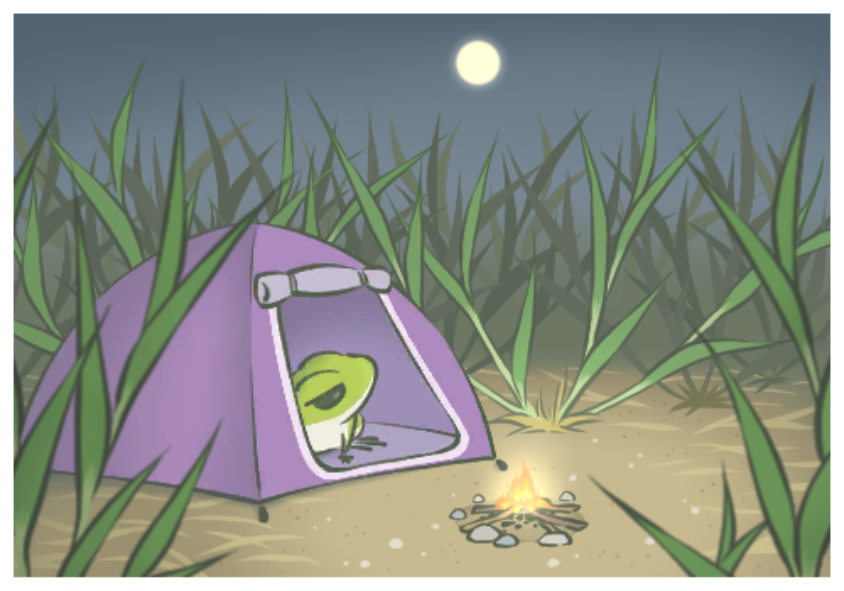
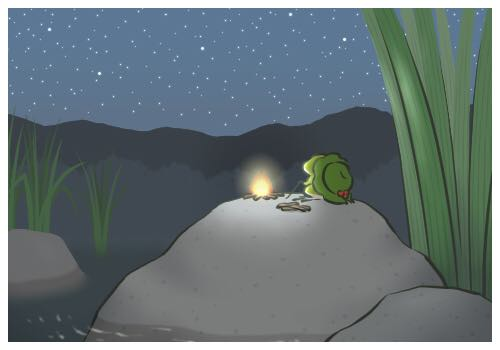

Number one in China
In January 2018, Travel Frog was the top free game on China’s App Store for more than two weeks. This happened even though the game was still in Japanese, with no Chinese translation.
Why a frog?
Some commentators connected the game’s popularity with “toad worship” culture in China.

An official Chinese version
On 2 April 2018, Alibaba Group announced a cooperation with Hit-Point to publish an official Chinese version, with Chinese-style game content. It included a version of the frog eating steamed buns.
